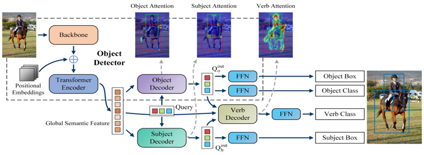
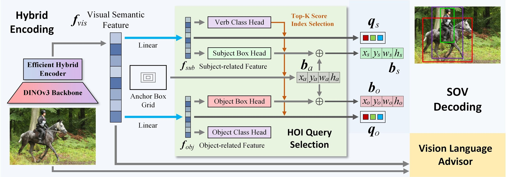
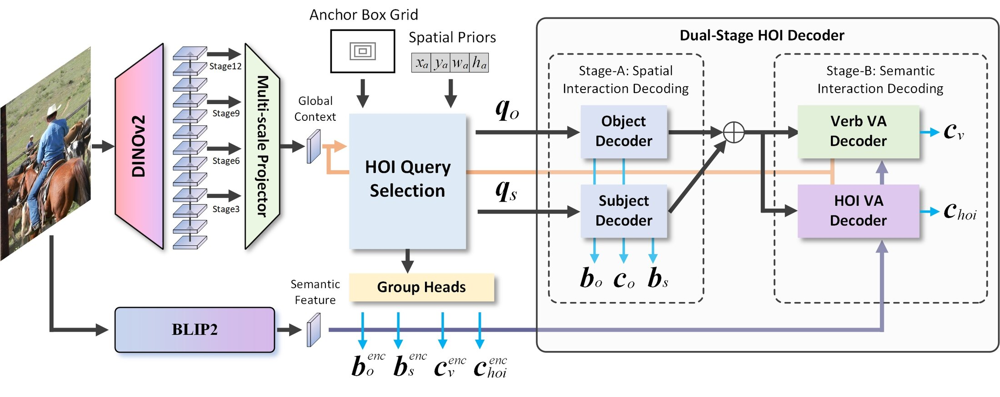

2022—23M.S.
Early foundations
Structuring the query
PQNet separates human and object localization into parallel branches. QAHOI adds multi-scale, query-based anchors for stronger spatial initialization.
ICPR 2026 Doctoral Consortium · Lyon, France
My research asks a deceptively simple question: how can machines understand not only what is in an image, but what people are doing with it?
One thesis · three persistent bottlenecks
01 / Research journey
Six first-author projects trace a continuous path from my master's research to my doctoral work. Each step resolves one limitation exposed by the previous generation.
Early foundations
PQNet separates human and object localization into parallel branches. QAHOI adds multi-scale, query-based anchors for stronger spatial initialization.
Detector-centric line
SOV-STG-VLA disentangles decoding and anchors training in semantic priors. Hybrid-SOV rebuilds the detection foundation. HOIBlender removes the encoder bottleneck entirely.
Reasoning-centric line
HOI-R1 reframes HOI detection as structured multimodal reasoning, combining thinking distillation with reinforcement learning.
02 / Selected work

01Parallel Queries for Human-Object Interaction Detection
Separates human and object localization into parallel transformer decoders, then fuses both representations in a dedicated verb decoder.
PQNet established the thesis's central design principle: different elements of an HOI triplet benefit from specialized query pathways. It outperformed prior methods with half the training epochs.
 02Best Paper
02Best PaperQuery-Based Anchors for Human-Object Interaction Detection
Introduces multi-scale query-based anchors that adapt to variations in object size and location for end-to-end HOI prediction.
QAHOI strengthened spatial initialization and demonstrated substantial gains with a transformer backbone on HICO-DET. The work received the MVA 2023 Best Paper Award.
 03
03Focusing on What to Decode and What to Train
Disentangles Subject, Object and Verb decoding, guides training with target-aware denoising, and injects BLIP-2 semantic priors through a Vision-Language Advisor.
The work shows that decoder training should be target-aware and semantically anchored from the start, improving stability without sacrificing accuracy.

04Bridging Detection Architectures with Foundation Models
Co-designs the HOI decoder with an RT-DETR-style hybrid encoder, self-supervised visual features, and context-aware HOI query selection.
Hybrid-SOV treats the detection foundation as a first-class design decision: query construction begins from image evidence rather than random or predefined embeddings.

05Under reviewA Next-Generation HOI Detection Baseline
Removes the dedicated encoder, selects subject-object candidates directly from backbone features, and blends spatial and language priors through dual-stage decoding.
An RF-DETR-style encoder-free pipeline combines progressive BLIP-2 prior fusion with grouped-query training, preserving efficiency while strengthening long-tail recognition.
 06ICPR 2026
06ICPR 2026Exploring the Potential of Multimodal Large Language Models for HOI Detection
Reframes interaction detection as structured language reasoning and aligns MLLMs through thinking distillation, supervised fine-tuning, and GRPO.
HOI-R1 introduces task-specific rewards for output format, object labels, verb labels and box IoU. Gains across four MLLM families suggest a general route toward more interpretable and generalizable HOI systems.
03 / ICPR 2026 spotlight
Traditional HOI pipelines rely on external detectors and fixed recognition heads. HOI-R1 asks an MLLM to observe, reason, and return structured human-object-interaction triplets directly.
Guide the model through humans, objects, and interactions with a precise answer schema.
Learn concise reasoning traces from a stronger teacher MLLM through supervised fine-tuning.
Optimize format, labels and localization with HOID-specific reward signals.
A signal for generalization
A training-free 72B MLLM reaches 29.62 mAP on rare HICO-DET classes, exceeding the rare-class score of QPIC after 150 training epochs. HOI-R1 then surfaces and aligns this implicit interaction knowledge in smaller models.
Read the ICPR paper ↗HICO-DET · Default rare split · mAP ↑
04 / Poster
Browse the ICPR 2026 poster below, open it full screen, or download the original print-ready PDF.
05 / What comes next
Use HOIBlender to supply precise spatial priors, then let an MLLM verify, explain, and refine interaction hypotheses in an iterative loop.
Learn a compositional verb-object space through language-initialized classifiers and contrastive objectives rather than a fixed, flat label table.